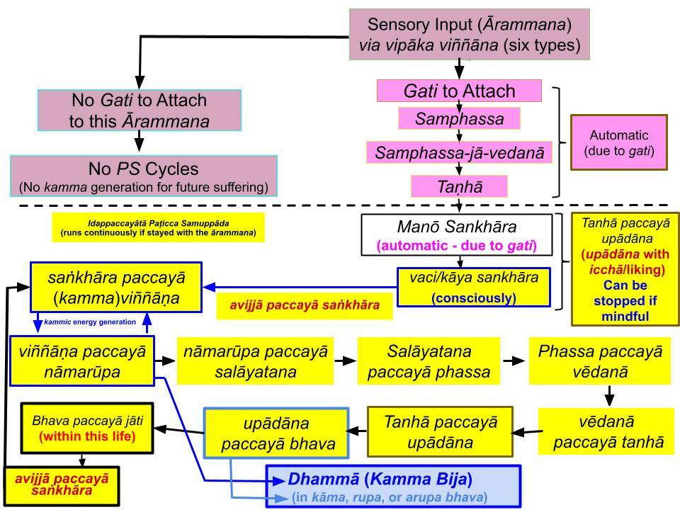

Nāmarupa, viññāṇa, and dhammā are closely related. They create kammic energies that can bring rebirth in various existences (bhava) based on the types of saṅkhāra involved.
June 21, 2023
Introduction
1. Even though Paṭicca Samuppāda (PS) is written as a linear sequence, it does not start at “avijjā paccayā saṅkhāra." It starts when an ārammaṇa or a sensory input comes to mind. See "Change of Mindset Due to an Ārammaṇa."
- Furthermore, once the PS process starts, it does not proceed linearly. As the chart below shows, the "taṇhā paccayā upādāna" step takes it back to the “avijjā paccayā saṅkhāra" step. That is because one starts generating saṅkhāra only after getting attached to an ārammaṇa.

Print/Download pdf: "Nāmarupa, Viññāṇa, Dhammā"
2. Furthermore, at the "viññāna paccayā nāmarūpa" step, before proceeding to the next step, it may go back and forth between "viññāna paccayā nāmarūpa" and "nāmarūpa paccayā viññāna" steps as also shown in the chart.
- Even though the 11 steps of PS are stated in a linear sequence for convenience, one must be able to see and understand these interconnections.
- The main goal is to understand how different types of kammic energies (giving rise to rebirths in various realms) are created by different types of one's own actions, i.e., abhisaṅkhāra.
- That helps eliminate the wrong view (sakkāya diṭṭhi) that there is an "unchanging self/soul/atman."
Creation of Kammic Energies in the Mind
3. All the steps in the Idappaccayatā Paṭicca Samuppāda (PS) involve ONLY the mind and energies created by the mind. See "Idappaccayātā Paṭicca Samuppāda – Bhava and Jāti Within a Lifetime."
- That is why NONE of its steps arise for a living Arahant. It is critical to contemplate this point.
- However, as we have discussed many times, one must not use the uddesa version but the niddesa version of PS. Otherwise, many seeming contradictions can arise, leading to confusion. See "'Elephant in the Room' – Direct Translation of the Tipiṭaka."
- Thus, for example, "saṅkhāra" and "viññāna" refer to "abhisaṅkhāra" and "kamma viññāna." Therefore, a living Arahant is fully conscious (has viññāna) and experiences vēdanā and saññā (saṅkhāra.) Furthermore, an Arahant does not have āyatana but has sense faculties (indriya.)
Idappaccayatā and Upapatti PS
4. It is the Idappaccayatā PS that operates at ANY given time.
- Kammic energies generated in Idappaccayatā PS processes are "dhammā." They are "anidassana/appaṭigha rupa" lying below the suddhāṭṭhaka level, i.e., they do not belong to the 28 types of rupa in the "rupa loka"; see "Nāma Loka and Rupa Loka – Two Parts of Our World."
- It is only at the moment of grasping a new existence (bhava) that a set of rupa belonging to the "rupa loka" (i.e., above the suddhāṭṭhaka level arises) via the Upapatti PS. That also occurs in an Idappaccayatā PS cycle at the moment of grasping a new existence/rebirth. Even those rupas are invisible to us: the hadaya vatthu and a set of pasāda rupa.
- The Upapatti PS only describes the overall process (cumulative effect of uncountable Idappaccayatā PS cycles spanning even eons.)
- That is a critical point to understand, and we can discuss it at the forum if there are any questions.
Critical Steps Where the Mind Creates Kammic Energy
5. Accumulation of kammic energy starts with the mind attaching to sensory input (ārammaṇa) because one has the wrong view/perception that it can bring future happiness. That initial attachment is automatic and is based on one's gati: "Change of Mindset Due to an Ārammaṇa."
- Once attached, the mind starts engaging in various types of vaci and kāya abhisaṅkhāra, and of course, that is due to the ignorance (avijjā) of the Noble Truths/PS, i.e., "avijjā paccayā saṅkhāra." See the above chart.
- Thus, now the PS cycle jumps to the "avijjā paccayā saṅkhāra" step. Simultaneously, a "kamma viññāna" arises in the mind, which is an expectation based on lobha, dosa, and moha. "Kamma viññāna" is more than consciousness (viññāna); it has kammic energy! Some of these "kamma viññāna" can lead to rebirth and are specifically called "paṭisandhi viññāna."
Nāmarupa Formation - A Critical Step
6. With a specific expectation (kamma viññāna), the mind starts combining "nāma" and "rupa," i.e., generating "nāmarupa." The mind visualizes various scenarios in javana cittās generating kammic energy. This is the origin of "future hadaya vatthu/pasāda rupa," capable of generating cittās! Nothing else in the universe can produce cittās. However, since created by the mind, such a set of suddhāṭṭhaka has a temporary/transient existence and thus has no value; it is a mirage/ghost. Thus the name bhuta (ghost) for a manomaya kāya is made with a set of hadaya vatthu/pasāda rupa. See "Bhūta and Yathābhūta – What Do They Really Mean" and "The Origin of Matter – Suddhāṭṭhaka."
- Both "kamma viññāna" and nāmarupa are directly connected to kammic energy/kamma bija that remains in viññāna dhātu to bring vipāka in the future. See "Nāma Loka and Rupa Loka – Two Parts of Our World" and "Where Are Memories Stored? – Viññāṇa Dhātu."
- Those are critical steps that one will understand at successively deeper levels as one starts comprehending PS.
- Now the mind may go back and forth between "viññāna paccayā nāmarūpa" and "nāmarūpa paccayā viññāna" many times before proceeding to the next step of "nāmarūpa paccayā salāyatana." This allows nāmarupa to get firmly established in "kamma viññāna." See "Nāmarūpa Sutta (SN 12.58)."
- All steps in PS are discussed in detail at "Paṭicca Samuppāda in Plain English."
- It is a good idea to read the above links and to understand "nāmarupa."
Kamma Bhava Depends on the Ārammaṇa
7. Kammic energies can remain in viññāna dhātu for a long time. They are categorized into three main categories: kāma bhava, rupa bhava, and arupa bhava. That categorization can be easily seen with the type of ārammaṇa initiating the kamma accumulation.
- Any immoral deed is done with an ārammaṇa in kāma loka and thus belongs in the kāma bhava. Engaging in meritorious deeds may lead to rebirth in a Deva realm, which also is within the kāma bhava.
- On the other hand, one may focus on a kasina object or breath and attain an anariya jhāna. That is a kamma belonging to "rupa bhava" since it leads to rebirth in a rupāvacara Brahma realm.
- The third type is "arupa bhava," and kammic energies accumulating in this category lead to rebirths in an arupāvacara Brahma realm. One must cultivate arupāvacara samāpatti to accrue kammic energies in this category.
- All 31 realms belong to one of those three main categories of bhava.
8. Each main category has sub-categories according to the realm of possible rebirth. For example, the four realms in the apāyās, the human realm, and the six Deva realms belong to "kāma bhava." The 16 rupāvacara Brahama realms belong to the "rupa bhava," and the four arupāvacara Brahma realms belong to the "arupa bhava."
- I have indicated the three main categories in the above chart.
- Also, note that a given ārammaṇa will initiate the accumulation of kammic energy in one of the three main bhava. See, for example, "Paṭhamabhava Sutta (AN 3.76)."
Ārammaṇa to Abhisankhāra to Kamma Bhava/Dhammā
9. Most of the ārammaṇa we encounter belong to kāma bhava. They lead to apuññābhisaṅkhāra (immoral deeds) or puññābhisaṅkhāra (moral deeds.)
- A few humans cultivate anariya jhāna by focusing the mind on a kasina object or breath. Those deeds (kamma) also belong to the puññābhisaṅkhāra. But this type of puññābhisaṅkhāra leads to kammic energies in the "rupa bhava."
- An even smaller number of humans proceed beyond that and cultivate arupāvacara samāpatti. Those involve āneñjābhisaṅkhāra and accumulate kammic energies in the "arupa bhava."
- These are discussed in detail in "Rebirths Take Place According to Abhisaṅkhāra."
10. The critical point is that dhammās (with kammic energy) are created in Paṭicca Samuppāda processes that start with "avijjā paccayā (abhi)saṅkhāra."
- However, we start accumulating new kamma (via abhisaṅkhāra) when we get attached to an ārammaṇa (sensory event.) Thus, the initiation of PS cycles is not at the “avijjā paccayā saṅkhāra” step but the “(sam)phassa paccayā vedanā” step.
- Attaching to sensory input (ārammaṇa) with liking (icchā) happens first; see the chart above. Also, see "Icchā (Cravings) Lead to Upādāna and to Eventual Suffering."
The Meaning of "Dhammā"
11. "Dhammā" means "to bear." They bear the kammic consequences of one's actions and play a critical role in rebirth.
- "Vipāka-bearing kammic energy" of a kamma stays in viññāṇa dhātu (or kamma bhava) as "kamma bija" or "dhammā."
- Just like a rupa can bring in a sensory input via the five physical senses, dhammā can directly bring a sensory input (memory of a previous kamma) to the mind.
- While the five types of rupa (vaṇṇa, sadda, gandha, rasa, phoṭṭhabba) belong to the "material world" made of suddhāṭṭhaka, "dhammā" are below the suddhāṭṭhaka stage.
- As we know, a suddhāṭṭhaka is the smallest unit of matter in Buddha Dhamma, belonging to the 28 types of rupa made with the four elements of pathavi, apo, tejo, and vayo. In contrast, dhammā are "upādāya rupa."
Dhammā Are Energies Below the Suddhāṭṭhaka Stage
12. Unlike the other five types of rupa, dhammā cannot be seen (anidassana) or touched/detected even with most sensitive instruments (appaṭigha) and is detectable only with the mind (dhammāyatana pariyāpannaṁ). Again, they do not belong to the 28 types of rupa in Abhidhamma.
- That is explained in the last verse of "2.3.1. Tikanikkhepa" in Dhammasaṅgaṇī as, "yañca rūpaṁ anidassanaṁ appaṭighaṁ dhammāyatanapariyāpannaṁ; asaṅkhatā ca dhātu—ime dhammā anidassana appaṭighā."
- Also see "Anidassana, Appaṭigha Rupa Due to Anidassana Viññāṇa."
- Therefore, dhammās bear the fruits of kamma! They can bring vipāka in the future.
- See "What are Rūpa? – Dhammā are Rūpa too!" for details.
13. All such dhammā generally appear in two forms: dhammā and adhammā.
- The word dhammā generally refers to "good dhammā." Those that arise due to "bad kamma" are "adhammā."
- "Dhamma Sutta (AN 10.182)" provides a direct explanation. "Killing, stealing, sexual misconduct, lying, divisive, harsh, or idle speech, greed, ill will, and wrong view. Those ten are adhammā. Abstaining from such actions (and having the mindset of generating "good javana power") leads to dhammā.
- However, both dhammā and adhammā belong to the dhammā category. It is just that adhammā "bear the fruits of bad kamma" and dhammā "bear the fruits of good kamma."
- The word "smell" indicates all types of odors, but if someone says "it smells," that means it is a "bad odor." That is the accepted usage. In the same way, dhammā may sometimes mean the "good type" but generally includes both. For example, dhammā in "manañca paṭicca dhamme ca uppajjati mano viññāṇaṁ" includes both types.
What Is Buddha Dhamma?
12. Dhamma (with the upper case "D" and short "a") refers to Buddha's teachings. In contrast, "dhammā" with lowercase "d" and long "a") refers to kammic energies that can bring vipāka in the future.
- Furthermore, Buddha Dhamma makes accumulated dhammā ineffective, thus leading to Nibbāna. For example, Angulimala killed almost a thousand people and was heading to rebirth in an apāya, but he avoided that because he attained Arahanthood.
- The word Buddha comes from "bhava" + "uddha "; here, "bhava" means "existence (in the 31 realms)," and "uddha" means "removal" or "making ineffective." Therefore, a Buddha figures out how to stop the rebirth process and thus end future suffering.
- Thus, "Buddha Dhamma" is "bhava uddha dhamma." It mainly refers to the teachings of the Buddha that lead to Nibbāna, i.e., to the "stopping of future existence/rebirths."
- Also, see "Dhamma and Dhammā – Different but Related."
"Sabbe Dhammā Anattā"
13. I have seen in discussion forums people state, "sabbe dhammā anattā" means Buddha Dhamma is also anattā!
- As we discussed above, dhammā is different from Buddha Dhamma.
- "Sabbe dhammā anattā" applies only to dhammā (accrued kammic energies) and not to Buddha Dhamma.
- Even though "good dhammās" lead to rebirth in human, Deva, and Brahma realms, they are ultimately useless because those existences are only temporary. At the end of such "temporary lives," rebirth in lower realms (apāyās) is inevitable unless one starts on the Noble Path by attaining at least the Sotapanna Anugāmi stage.